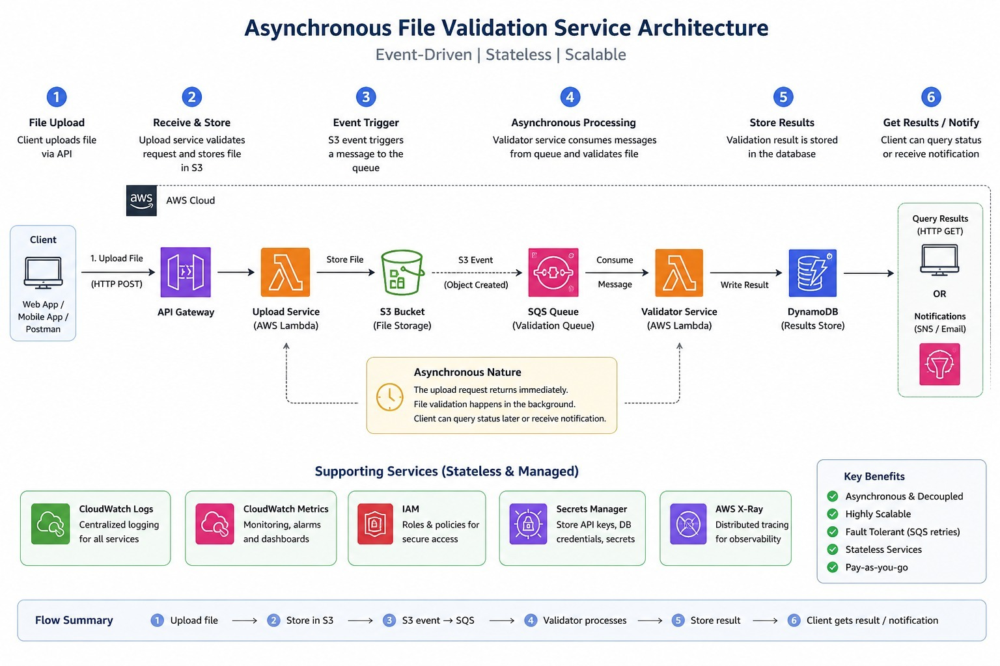

Secure File Validation Service
A serverless backend that accepts file uploads, stores them in S3, validates file safety asynchronously, and records validation results in DynamoDB.
1. System Overview
The application validates uploaded files using simple but security-relevant checks: allowed extension, size limit, MIME/content type, magic bytes, CSV shape, and executable spoofing detection. The project focus is the cloud architecture: Terraform provisioning, asynchronous processing, CI/CD, and 15-Factor compliance.
| Requirement | Implementation |
|---|---|
| Two functional services | Upload Lambda and Validator Lambda. |
| Data storage | DynamoDB table file-validation-results; S3 upload bucket. |
| Terraform only | All AWS resources are defined in the infrastructure repository. |
| CI/CD | GitHub Actions builds artifacts and updates Lambda on push. |
| Live restore | terraform destroy, build-artifacts.ps1, and terraform apply. |
2. Architecture

Figure 1. Serverless architecture: API Gateway, Lambda services, S3, SQS, DynamoDB, IAM, and CloudWatch.
- Client uploads a file through API Gateway.
- Upload Lambda authenticates the request, stores the file in S3, and creates a
PENDINGDynamoDB record. - S3 object creation sends an event to SQS.
- SQS invokes the Validator Lambda.
- Validator Lambda reads the file from S3 and updates DynamoDB with
ACCEPTED,REJECTED, orSUSPICIOUS. - User/admin APIs read upload history and alerts from DynamoDB.
3. Services
Repository: SWE455-upload-service
Entrypoint: index.handler
Responsibilities: receive upload, check API key, store file in S3, create DynamoDB record, expose user/admin REST endpoints.
Repository: SWE455-validator-service
Entrypoint: index.handler
Responsibilities: consume SQS events, read S3 file, validate type/content, update DynamoDB result.
4. Data Model
DynamoDB table: file-validation-results. Partition key: file_id.
| Field | Description |
|---|---|
file_id | Primary upload identifier. |
user_id | User who uploaded the file. |
filename | Original filename. |
s3_bucket, s3_key | Uploaded object location. |
status | PENDING, ACCEPTED, REJECTED, or SUSPICIOUS. |
size_bytes | File size. |
reason | Validation result explanation. |
detected_type | Type detected by signature/content checks. |
uploaded_at, validated_at | Lifecycle timestamps. |
5. REST API
| Method | Path | Auth | Description |
|---|---|---|---|
| POST | /files/upload | x-api-key | Upload a file for validation. |
| GET | /files/{file_id} | x-api-key | Get one file result. |
| GET | /files | x-api-key | List upload history. |
| GET | /admin/uploads | x-admin-key | Admin view of all uploads. |
| GET | /admin/alerts | x-admin-key | Admin view of suspicious uploads. |
| GET | /health | None | Liveness check. |
| GET | /ready | None | Readiness check. |
| GET | /metrics | None | Runtime counters. |
curl.exe -X POST "$API_URL/files/upload?user_id=user-demo" ` -H "x-api-key: student-demo-key" ` -F "file=@C:\path\to\test.pdf"
6. Terraform and Runtime Configuration
The infrastructure repository provisions all cloud resources. Lambda zip
files are built by build-artifacts.ps1 and uploaded by Terraform
as S3 artifact objects.
| Resource | Purpose |
|---|---|
| API Gateway | Public HTTP entry point. |
| Upload Lambda | Upload API and history/admin endpoints. |
| S3 upload bucket | Stores uploaded files. |
| SQS queue | Buffers validation events. |
| Validator Lambda | Validates files asynchronously. |
| DynamoDB | Stores results and history. |
| IAM role/policies | Allow Lambda access to logs, S3, SQS, and DynamoDB. |
Environment Variables
| Service | Variables |
|---|---|
| Upload Lambda | API_KEY, ADMIN_API_KEY, UPLOAD_BUCKET_NAME, UPLOADS_TABLE_NAME, MAX_UPLOAD_BYTES |
| Validator Lambda | UPLOADS_TABLE_NAME, MAX_FILE_SIZE_BYTES, LOG_LEVEL |
7. CI/CD
Each service repository has a GitHub Actions workflow. On push to
main, the workflow tests the service, builds the Lambda zip,
uploads it to the artifact bucket, and updates the Lambda function.
| Repository | Pipeline |
|---|---|
SWE455-upload-service | Run tests, build upload.zip, upload to S3, update upload-service Lambda. |
SWE455-validator-service | Run tests, build validator.zip, upload to S3, update validator-service Lambda. |
Required GitHub Actions settings: AWS_ACCESS_KEY_ID, AWS_SECRET_ACCESS_KEY, AWS_REGION, and ARTIFACT_BUCKET.
8. 15-Factor Application Mapping
| Factor | Project Implementation |
|---|---|
| Codebase | Separate repositories for infrastructure, upload service, and validator service. |
| Dependencies | Python dependencies are declared in requirements.txt; Lambda artifacts are built from source. |
| Config | Runtime values are environment variables managed by Terraform. |
| Backing Services | S3, SQS, DynamoDB, API Gateway, and Lambda are attached cloud services. |
| Build, Release, Run | Build scripts/workflows create zip artifacts; Terraform releases infrastructure; Lambda runs artifacts. |
| Processes | Lambdas are stateless; state is stored in S3 and DynamoDB. |
| Port Binding | API Gateway exposes HTTP routes; Lambda code does not manage ports. |
| Concurrency | Lambda scales with requests and SQS messages. |
| Disposability | Short Lambda invocations, SQS retry behavior, and health endpoints support quick start/stop. |
| Dev/Prod Parity | Same code and artifacts are used locally and in AWS deployment. |
| Logs | Logs go to stdout/stderr and are collected by CloudWatch. |
| Admin Processes | Terraform and build scripts handle setup, teardown, and deployment tasks. |
| API First | REST endpoints and OpenAPI documentation are provided. |
| Telemetry | /health, /ready, /metrics, Lambda logs, and CloudWatch metrics. |
| Authentication & Authorization | User API key and admin API key protect endpoints. |
9. Demonstration Plan
cd Infrastructure\SWE455ProjectInfrastructure terraform destroy .\build-artifacts.ps1 terraform init terraform apply $API_URL = terraform output -raw api_url curl.exe "$API_URL/health"
- Upload a valid PDF and show the final
ACCEPTEDrecord. - Upload executable content renamed as PDF and show
SUSPICIOUS. - Upload an oversized file and show rejection.
- Open DynamoDB to show upload history.
- Open CloudWatch logs for Upload Lambda and Validator Lambda.
- Push a small service change and show GitHub Actions deployment.
10. Testing Summary
| Check | Result |
|---|---|
| Upload service tests | 17 passed. |
| Validator service tests | 8 passed. |
| Python compile checks | Passed. |
| Artifact build script | Generated upload.zip and validator.zip. |
11. Source Repositories
- Infrastructure: https://github.com/amussab/SWE455ProjectInfrastructure
- Upload Service: https://github.com/amussab/SWE455-upload-service
- Validator Service: https://github.com/amussab/SWE455-validator-service
12. AI Appendix
AI assistance was used to inspect the repositories, align service contracts, implement validation/upload integration, prepare deployment workflows, and draft this report. The team should attach the relevant prompt transcript or this summary as the required AI appendix.
Prompt summary: - Understand courseProject.md and existing repositories. - Implement validator service. - Align upload service, validator service, and Terraform. - Add CI/CD workflow guidance. - Create concise black-and-white HTML technical report.